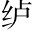
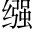

《老子》曰：「至治之極，鄰國相望，雞狗之聲相聞，民各甘其食，美其服，安其俗，樂其業，至老死不相往來至治之世，不知有貨殖。。」必用此為務，挽同「晚」。近世塗民耳目，則幾無行矣言必用《老子》所說以為務，而挽近之世，止知塗飾民之耳目，必不可行矣。○史公將伸己說，而先引《老子》之言破之。。
太史公曰：夫神農以前，吾不知已頂「至治之極」。。至若《詩》、《書》所述虞、夏以來，耳目欲極聲色之好，口欲窮芻豢宦。之味，身安逸樂，而心誇矜勢能之榮謂勢所能至之榮也。○此欲富之根。，使俗之漸尖。民久矣，雖戶說以眇論微妙之論。，終不能化民多嗜慾，則不能至治矣。。故善者因之，其次利道之，其次教誨之，其次整齊之，最下者與之爭善者因之，是神農以前人。利道，是太公一流。教誨、整齊，是管仲一流。最下與爭，則武帝之鹽鐵平準矣。史公其多感慨乎！。
夫山西饒材、竹、榖、盧。、旄、玉石榖，楮也，皮可為紙。，山東多魚、鹽、漆、絲、聲色，江南出楠, 、梓、姜、桂、金、錫、連、丹沙、犀、瑇屬，可以為布。旄，牛尾也。瑁南。、珠璣、齒、革代。，龍門、碣妹。石北多馬、牛、羊、旃、裘、筋、角連，鉛之未煉者。璣，珠之不圓者。，銅、鐵則千里往往山出棋置傑。。此其大較也龍門，山名，在馮翊夏陽縣。碣石，近海山名，在冀北。。皆中國人民所喜好，謠俗被服飲食、奉生送死之具也棋置，如圍棋之置，言處處皆有也。○忽變一倒句，妙。。故待農而食之，虞而出之，工而成之，商而通之方論貨殖之理，忽雜敘四方土產，筆勢奇矯。。此寧有政教發徵期會哉長句。？人各任其能，竭其力，以得所欲。故物賤之徵貴，貴之徵賤農、虞、工、商，是貨殖之人，前後脈絡。，各勸其業，樂其事，若水之趨下，日夜無休時，不召而自來，不求而民出之。豈非道之所符而自然之驗邪宕句有致。？
《周書》曰：「農不出則乏其食，工不出則乏其事，商不出則三寶絕三寶，謂珠、玉、金。，虞不出則財匱少。」財匱少而山澤不闢同「闢」。矣農、工、虞、商，復點。。此四者，民所衣食之原也。原大則饒，原小則鮮。上則富國，下則富家富國、富家，是通篇眼目。。貧富之道，莫之奪予，而巧者有餘，拙者不足此段就上文一反，言貨殖亦非易事，存乎其人，以引起太公、管仲等。。故太公望封於營丘齊地。，地潟昔。滷魯。○瀉滷，鹹地也。，人民寡，於是太公勸其女功，極技巧，通魚鹽，則人物歸之，同「襁」。至而輻湊。故齊冠帶衣履天下，海岱之間斂袂而往朝焉。其後齊中衰，管子修之引太公、管仲，以為貨殖之祖。，設輕重九府九府，蓋錢之府藏。論鑄錢之輕重，故云輕重九府。，則桓公以霸，九合諸侯，一匡天下；而管氏亦有三歸，位在陪臣，富於列國之君。是以齊富強至於威、宣也太公、管仲是富國。。
故曰：「倉廩實而知禮節，衣食足而知榮辱。」禮生於有而廢於無。故君子富，好行其德；小人富，以適其力。淵深而魚生之，山深而獸往之，人富而仁義附焉。富者得勢益彰，失勢則客無所之，以同「已」。而不樂言失其富厚之勢，則客無所附而不樂。。諺曰：「千金之子，不死於市。」此非空言也豔富羞貧，雖有激之語，然亦確論。。故曰：「天下熙熙，皆為利來葉釐。；天下壤壤，皆為利往四句用韻，蓋古歌謠也。熙熙，和樂也。壤壤，和緩貌。。」夫千乘之主、萬家之侯、百室之君尚猶患貧，而況匹夫編戶之民乎暗刺時事，語多感慨。！
天地之利，本是有餘，何至於貧？貧始於患之一念，而弊極於爭之一途，故起處全寄想夫至治之風也。史公豈真豔貨殖者哉？「千乘」數句，蓋見天子之榷貨、列侯之酎金而為之一嘆乎！